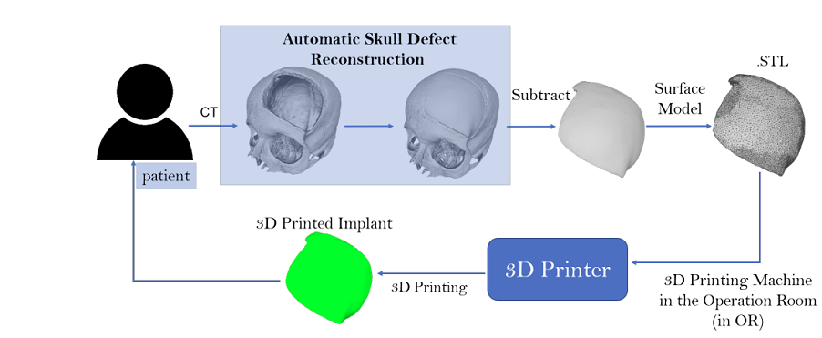

A cloud-server based application for automatic cranial implant generation

Abstract
We introduce a fully automatic system for cranial implant design, a common task in cranioplasty operations. The system is currently integrated in Studierfenster, an online, cloud-based medical image processing platform for medical imaging applications. Enhanced by deep learning algorithms, the system automatically restores the missing part of a skull (i.e., skull shape completion) and generates the desired implant by subtracting the defective skull from the completed skull. The generated implant can be downloaded in the STereoLithography (.stl) format directly via the browser interface of the system. The implant model can then be sent to a 3D printer for in loco implant manufacturing. Furthermore, thanks to the standard format, the user can thereafter load the model into another application for post-processing whenever necessary. Such an automatic cranial implant design system can be integrated into the clinical practice to improve the current routine for surgeries related to skull defect repair (e.g., cranioplasty). Our system, although currently intended for educational and research use only, can be seen as an application of additive manufacturing for fast, patient-specific implant design.Presentation
Press Coverage


BibTex
@article{li2020online,
title={An online platform for automatic skull defect restoration and cranial implant design},
author={Li, Jianning and Pepe, Antonio and Gsaxner, Christina and Egger, Jan},
journal={arXiv preprint arXiv:2006.00980},
year={2020}
}